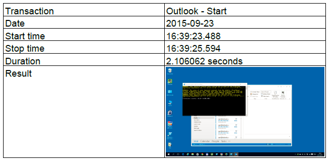

Workplace and VDI test automation with PowerShell
Why to do test automation with PowerShell?
I was involved in a project to implement a new Virtual Desktop Infrastructure (VDI) within a large company
To ensure the environment is stable and well-functioning all the time on the same way, I made a script to test the basic functionality of the virtual desktop image. The script also measures the time it takes to complete an action, so this can be used to set a baseline for performance measurement.
The basic functionality which is scripted is:
- Start Outlook and Send an email
- Can the user browse the internet
- Open a Word document, Print Preview, Print, and save the document
- Open an Excel sheet, Save it under a different name
- Browse the AppV content store
- Start an AppV application
Other actions can be scripted as well and added to the script.
When the script has run completely with success it will ensure you that the basic functionality is still working.
See the script in action
This video gives a quick overview what kind of actions are scripted and how it works.
Workplace and VDI test automation with PowerShell from EasternNL on Vimeo.
What kind of results do the script make?
When using the script a PDF document is generated which shows the following for each step:

An example PDF document can be found here: 2015-09-23 163927 Workplace and VDI test-automation with PowerShell.pdf
Also an .su file is generated which has the following content:
12015-08-26 07:23:13.439 07:23:14.48 0.6092069 Excel - start C:\Users\Erik\AppData\Local\Temp\2015-08-26 07.23.13.439 Excel - start.png
This file is tab-separated and can be imported in Excel or other tools for further investigation.
An example SU file can be found here: test.su
My baseline tools
The script is tested on:
- Windows 7 with Office 2010
- Windows 10 with Office 2013
Powershell version 3 or higher is enough to run this script. I am sure this will work on other platforms like Windows 8 e.g. as well.
The iTextSharp module is needed to generate the PDF’s and can be found here: http://sourceforge.net/projects/itextsharp/
Boxcutter.exe is used to make screenshots during the test. Boxcutter can be found here: http://keepnote.org/boxcutter/
Script code
Basically the following code is needed to start Excel:
1$excel = new-object -comobject Excel.Application
2$excel.visible = $True
Other example is the code to start Internet Explorer:
1$ie = new-object -com "InternetExplorer.Application"
2$ie.visible = $true
(In a second blog item I will explain how to do the automation of browsing on the internet.)
Basically it is simple, however in my coding some extra steps are involved to measure the start of Excel, and to make a screenshot to ensure everything went well. The Write-Transaction function is included in my module and will write the measured times to the .su file and take the screenshot as well.
1$transactionname = "Excel - start"
2Write-Transaction -transactionname $transactionname -sleepseconds $sleepseconds -outputfile $outputfile -screenshot $true -measured ( Measure-Command {
3 $excel = new-object -comobject Excel.Application
4 $excel.visible = $True
5 } )
In the end of the script the complete .su file is converted to PDF format together with the screenshots.
Conclusion
Windows endpoint testing, for VDI but also for physical desktop can be done with scripts. When launching every day, and eventually on different times of a day the performance and functionality of an Windows desktop can be measured.
The complete script
1# load the modules
2Import-Module "$(Split-Path -parent $PSCommandPath)\Test-Availability.psm1" -Force
3Import-Module "$(Split-Path -parent $PSCommandPath)\iTextSharp.psm1" -Force
4
5# -------------------------------------------
6# configure variabeles
7
8$testdocument = "$(Split-Path -parent $PSCommandPath)\testdocument.docx"
9$testworkbook = "$(Split-Path -parent $PSCommandPath)\testworkbook.xlsx"
10$printer = "Bullzip PDF Printer"
11$appvcontentstore = "C:\AppV"
12
13# -------------------------------------------
14
15# Stop if an error has occured, will be handled by the try/catch
16$ErrorActionPreference = "Stop"
17
18# Verbose messages on
19#$VerbosePreference = "Continue"
20# wait time between the steps
21$sleepseconds = 1
22# temporary path to log the output to
23$outputfile = "$($env:temp)\test.su"
24if (Test-Path $outputfile) { rm $outputfile }
25
26
27
28try {
29
30 # Start Outlook
31 $transactionname = "Outlook - Start"
32 Write-Transaction -transactionname $transactionname -sleepseconds $sleepseconds -outputfile $outputfile -screenshot $true -measured ( Measure-Command {
33 $outlook = new-object -com "Outlook.Application"
34 #$outlook.visible = $true
35 $namespace = $outlook.GetNamespace("MAPI")
36 $folder = $namespace.GetDefaultFolder(16)
37 $folder.Display()
38 } )
39
40 # Write email
41 # (not sending an email because that is blocked by default in Outlook)
42 $transactionname = "Outlook - Write message in draft"
43 Write-Transaction -transactionname $transactionname -sleepseconds $sleepseconds -outputfile $outputfile -screenshot $true -measured ( Measure-Command {
44 $mail = $outlook.CreateItem(0)
45 $mail.Subject = "$(Get-Date -format "yyyy-MM-dd HH:mm:ss") VDI Test Script"
46 $mail.To = "user@domain.com"
47 $mail.Body = "Testing the VDI functionality with a script"
48 $mail.save()
49 } )
50
51 # Close Outlook
52 $transactionname = "Outlook - Exit"
53 Write-Transaction -transactionname $transactionname -sleepseconds $sleepseconds -outputfile $outputfile -screenshot $true -measured ( Measure-Command {
54 $outlook.Quit()
55 } )
56
57 # Internet Explorer - eastern.nl
58 $transactionname = "Internet Explorer - Start"
59 Write-Transaction -transactionname $transactionname -sleepseconds $sleepseconds -outputfile $outputfile -screenshot $true -measured ( Measure-Command {
60 $ie = new-object -com "InternetExplorer.Application"
61 $ie.visible = $true
62
63 Set-ForegroundWindow "Internet Explorer"
64 } )
65
66 # navigate
67 $transactionname = "Internet Explorer - www.eastern.nl"
68 Write-Transaction -transactionname $transactionname -sleepseconds $sleepseconds -outputfile $outputfile -screenshot $true -measured ( Measure-Command {
69 $ie.Navigate("http://www.eastern.nl/")
70
71 # wait until the page is ready, all parameters okay and the text Erik van Oost is inside the document
72 Wait-InternetExplorer -ie $ie -text "Erik van Oost"
73 } )
74
75 $transactionname = "Internet Explorer - Quit"
76 Write-Transaction -transactionname $transactionname -sleepseconds $sleepseconds -outputfile $outputfile -screenshot $true -measured ( Measure-Command {
77 # Internet Explorer Exit
78 $ie.quit()
79 } )
80
81 # Word
82 $transactionname = "Word - Start"
83 Write-Transaction -transactionname $transactionname -sleepseconds $sleepseconds -outputfile $outputfile -screenshot $true -measured ( Measure-Command {
84 $word=new-object -ComObject "Word.Application"
85 $word.visible = $true
86 } )
87
88 # Document open
89 $transactionname = "Word - Open testfile"
90 Write-Transaction -transactionname $transactionname -sleepseconds $sleepseconds -outputfile $outputfile -screenshot $true -measured ( Measure-Command {
91 $doc = $word.Documents.Open($testdocument)
92 } )
93
94 # Document saven op temp
95 $transactionname = "Word - Save testfile"
96 Write-Transaction -transactionname $transactionname -sleepseconds $sleepseconds -outputfile $outputfile -screenshot $true -measured ( Measure-Command {
97 $filename = "$($env:temp)\test.docx"
98 $file_formatcode = 12
99
100 if (Test-Path filename) { rm $filename -Force -ErrorAction SilentlyContinue }
101 $doc.SaveAs([ref]$filename, [ref]$file_formatcode)
102 } )
103
104 $transactionname = "Word - Print preview"
105 Write-Transaction -transactionname $transactionname -sleepseconds $sleepseconds -outputfile $outputfile -screenshot $true -measured ( Measure-Command {
106 $doc.PrintPreview()
107 } )
108
109 <#
110 $transactionname = "Word - Print"
111 Write-Transaction -transactionname $transactionname -sleepseconds $sleepseconds -outputfile $outputfile -screenshot $true -measured ( Measure-Command {
112 # set active printer
113 $word.activeprinter = $printer
114
115 # Document afdrukken
116 $doc.PrintOut([ref]$false)
117 } )
118 #>
119
120 $transactionname = "Word - Quit"
121 Write-Transaction -transactionname $transactionname -sleepseconds $sleepseconds -outputfile $outputfile -screenshot $true -measured ( Measure-Command {
122 # Close document
123 $doc.Close()
124 # Exit Word
125 $word.Quit()
126 } )
127
128 # Start Excel
129 $transactionname = "Excel - start"
130 Write-Transaction -transactionname $transactionname -sleepseconds $sleepseconds -outputfile $outputfile -screenshot $true -measured ( Measure-Command {
131 $excel = new-object -comobject Excel.Application
132 $excel.visible = $True
133 } )
134
135 # Open workbook
136 $transactionname = "Excel - Open testfile"
137 Write-Transaction -transactionname $transactionname -sleepseconds $sleepseconds -outputfile $outputfile -screenshot $true -measured ( Measure-Command {
138 $wb = $excel.Workbooks.Open($testworkbook)
139 } )
140
141 # Save workbook
142 $transactionname = "Excel - Save testfile"
143 Write-Transaction -transactionname $transactionname -sleepseconds $sleepseconds -outputfile $outputfile -screenshot $true -measured ( Measure-Command {
144 $filename = "$($env:temp)\test.xlsx"
145 $excel.displayalerts = $false
146 $wb.SaveAs($filename)
147 } )
148
149 # Close Excel
150 $transactionname = "Excel - Quit"
151 Write-Transaction -transactionname $transactionname -sleepseconds $sleepseconds -outputfile $outputfile -screenshot $true -measured ( Measure-Command {
152 $excel.quit()
153 } )
154
155 # Visit AppV Content Store
156 $transactionname = "AppV - ContentStore"
157 Write-Transaction -transactionname $transactionname -sleepseconds $sleepseconds -outputfile $outputfile -screenshot $true -measured ( Measure-Command {
158 $app = Start-Process cmd.exe -PassThru -ArgumentList " /k dir `"$($appvcontentstore)`" /ogneds" -WorkingDirectory "C:\"
159
160 } )
161
162 # Content store Sluiten
163 Stop-Process -Id $app.Id
164
165 # AppV Application
166 # %ALLUSERSPROFILE%\Microsoft\AppV\Client\Integration\4C39F850-61B3-4ED5-95E0-0F21C0B6D0BB\Root\DLS.exe
167 $transactionname = "AppV Application Dymo Label Writer"
168 Write-Transaction -transactionname $transactionname -sleepseconds 5 -outputfile $outputfile -screenshot $true -measured ( Measure-Command {
169 $app = Start-Process C:\ProgramData\Microsoft\AppV\Client\Integration\4C39F850-61B3-4ED5-95E0-0F21C0B6D0BB\Root\DLS.exe -PassThru
170
171 } )
172
173 # Content store Sluiten
174 Stop-Process -Id $app.Id
175
176
177
178 # End of test
179 $result = Show-PopUp -Message "Test ended sucessfully" -Title "Test Automation" -ButtonSet OK -IconType Information
180}
181catch
182{
183 # log if an error occurs, including a screenshot with the error
184 $Error
185
186 Write-Transaction -transactionname "ERROR $transactionname" -sleepseconds 0 -outputfile $outputfile -screenshot $true -measured ( Measure-Command { sleep -Milliseconds 100 } )
187
188 $result = Show-PopUp -Message "Test ended with error" -Title "Test Automation" -ButtonSet OK -IconType Exclamation
189}
190
191# Ask for conversion to PDF
192 $result = Show-PopUp -Message "Do you want to write the results to a PDF file?" -Title "PDF file" -ButtonSet YNC -IconType Question
193
194 if ($result -eq 6)
195 {
196 # when in an Citrix Session log some information about Citrix
197 $sessioninfo = (Get-ItemProperty -Path HKLM:SOFTWARE\Citrix\ICA\Session -ErrorAction SilentlyContinue )
198 $outputpdf = (Get-FileName -defaultFileName "$(get-date ((ls $outputfile).CreationTime) -Format "yyyy-MM-dd HHmmss") Workplace and VDI test-automation with PowerShell.pdf" )
199 $message = "VDI Desktop Image testscript run on $(get-date -Format "yyyy-MM-dd HH:mm"). `n`nOutput PDF: $(split-path $outputpdf -leaf)`nComputername: $($env:computername)`n"
200 # when in an Citrix Session log some information about Citrix
201 if ($sessioninfo -ne $null)
202 {
203 $message += "Clientaddress: $($sessioninfo.clientaddress) `nClientname: $($sessioninfo.clientname) `nClientversion: $($sessioninfo.clientversion)"
204 }
205 $message += "`n`n"
206 convert-su-to-pdf -inputsu $outputfile -outputpdf $outputpdf -title "Desktop Image functional Script" -message $message
207 }
208
209# ask for logoff
210 $result = Show-PopUp -Message "Do you want to logoff?" -Title "Logoff" -ButtonSet YNC -IconType Question
211
212 if ($result -eq 6)
213 {
214 start-process logoff
215 }
Download
Download the script, module and test-files here: sources.zip